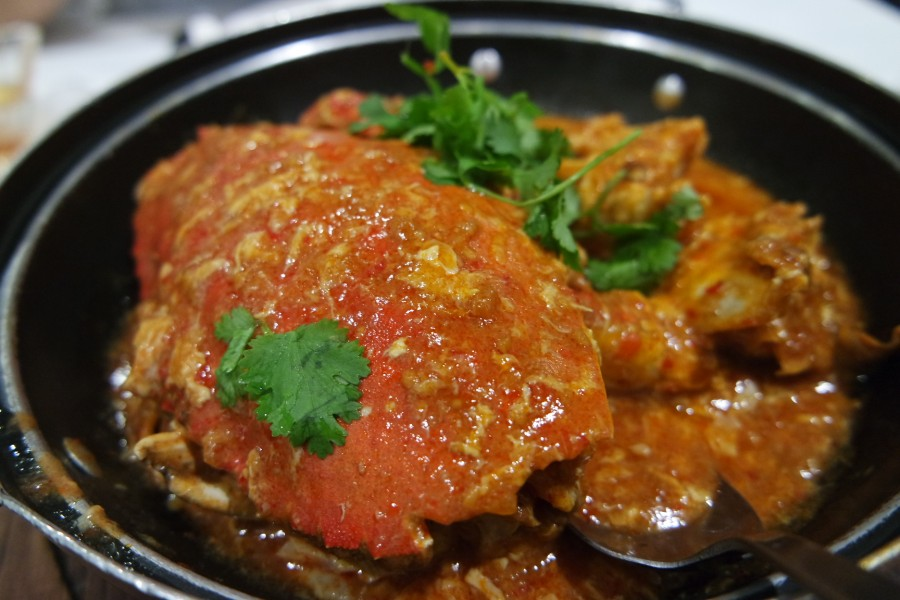

칠리크랩
칠리크랩은 볶은 게에 칠리소스와 토마토소스로 맛을 낸 싱가포르 요리이다.
1950년대 중반 한 부부의 시도로 토마토소스를 넣어 만든 게 요리에 칠리소스를 추가한 것이 칠리크랩의 원형이 된 것으로 알려져 있다. 이후 달걀 등 다른 재료가 더해지며 오늘날의 모습을 갖추었다. 부드러운 게살과 짭짤한 맛, 달콤한 맛, 짭짤한 맛이 어우러진 소스가 특징이며, 주로 빵과 함께 먹는다 [네이버 지식백과] 칠리크랩 [chili crab] (세계 음식명 백과, 신중원)

칠리크랩의 종류
페퍼크랩은 싱가포르에서 칠리크랩의 사촌 격으로 언급되는 또 다른 게 요리이다.
칠리소스로 매콤한 맛을 낸 칠리크랩과 달리 페퍼크랩은 페퍼, 즉 후추로 매운맛을 낸다. 칠리크랩은 매콤하고 달콤한 맛을 내는 데 비해 페퍼크랩은 매운맛이 두드러진다. 또한 걸쭉한 소스가 접시에 가득 담겨 나오는 칠리크랩과 달리 페퍼크랩은 후추로 만든 물기 없는 소스가 게를 덮을 정도로만 나온다는 것도 차이점이다.
[네이버 지식백과] 칠리크랩 [chili crab] (세계 음식명 백과, 신중원)
